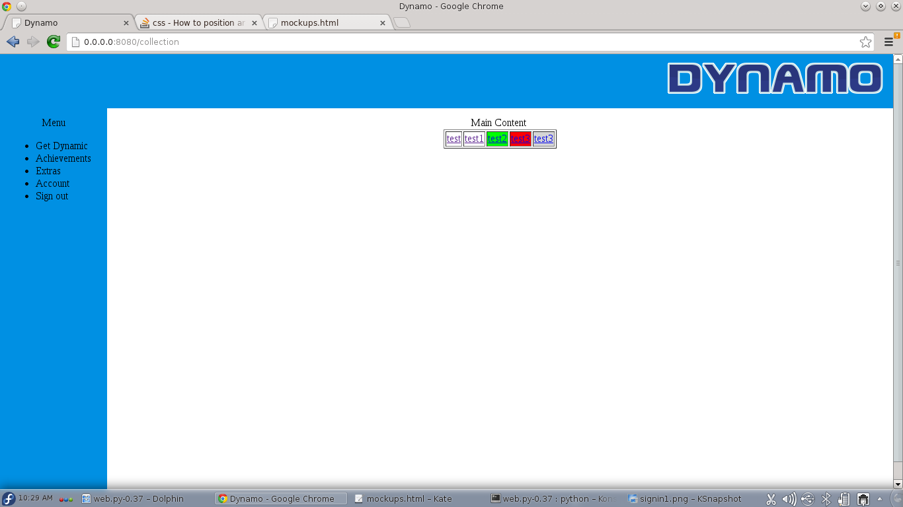
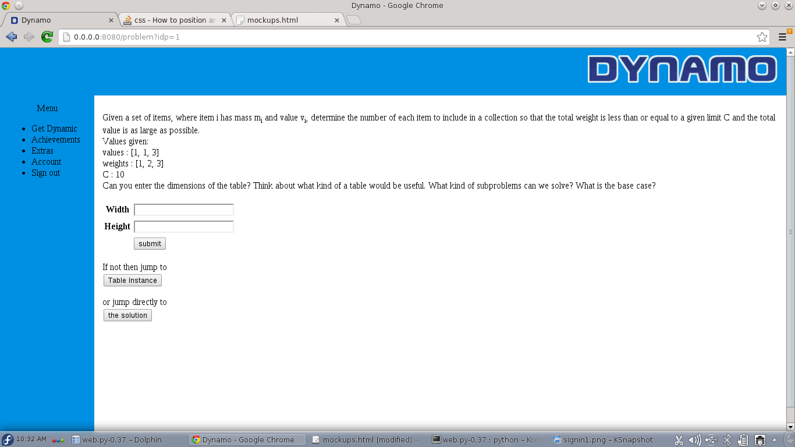
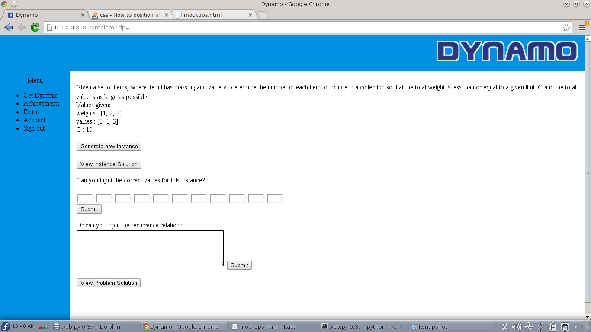

Mockups for the Dynamo dynamic programming tutor. The menu consists of 5 entries:
Login page:
Register page: Shows form to register
Achievements Page : Shows a list of achievements and details how they can be achieved
Extras - shows unlocked content
Account - option to change password
Collection page : users are shown a table containing the collection of problems where each cell has different color code depending on their progress through that particular problem. The user then selects a problem and is shown the problem page. 
Problem page : Users are shown the problem definition and are asked to input the dimensions of the table. If the dimensions are wrong the system instructs them to try again. If they are right,they proceed to the problemtable page. Also, they are able to skip entering the dimensions and just continue to the table or to jump straight to the solution. 
Problemtable page : Users are still being shown the problem definition and an instance of the problem. They have an option to request a new instance or to visualize the solution of the current instance. They are also able to input the solution themselves and check if it is right. Users are also able to enter the recurrence relation and upon submittal the system will output in a different table the output of their algorithm. If they are stuck they can also skip to the text of the solution. 
Solution page : Users are shown a detailed textual solution of the problem. This text should be structured as a series of hints which can be revealed
on demand so the user can think about the problem after each hint and try some solutions at that stage.
There should also be links to other problems.